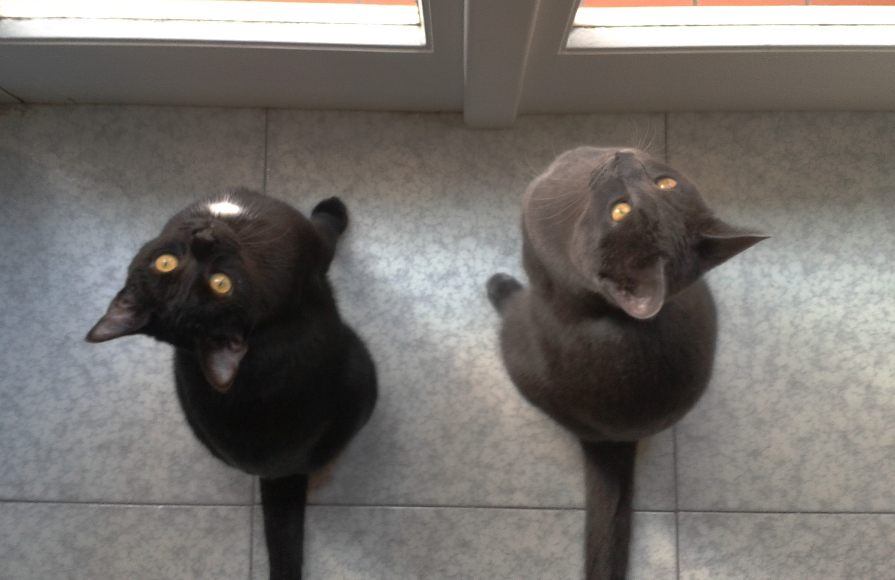
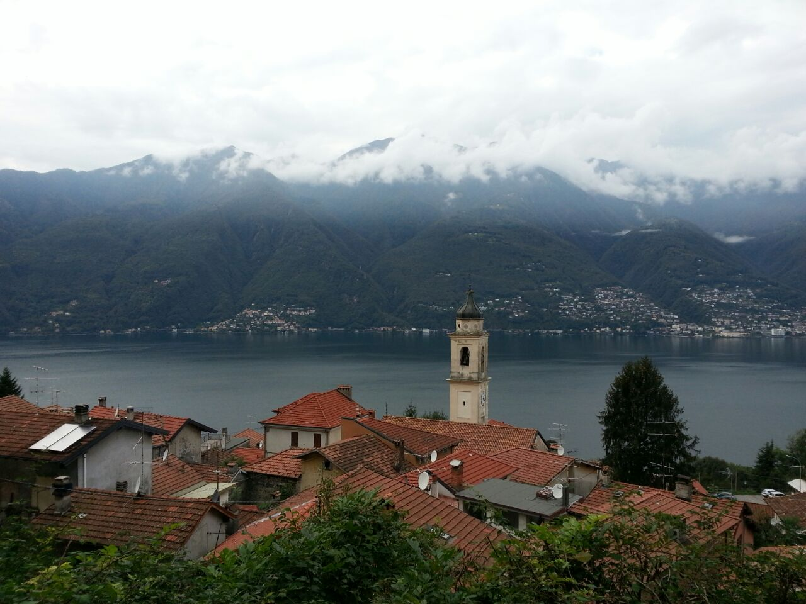

1. Introduzione
Ciao, mi chiamo Giulia, sono nata nel 1997 e sono di Milano!
Vivo con i miei genitori, mia sorella minore e i miei due amatissimi micini (nella foto qui sotto).

Frequento la Facoltà di Design al Politecnico di Milano e sono al primo anno di Design degli Interni.
Fin dalla scuola media ho sempre voluto entrare al Politecnico perché mi piace molto creare e sono anche portata per le discipline artistiche, soprattutto per quanto riguarda la pratica.
Infatti ho frequentato il Liceo Artistico di Brera ad indirizzo architettura.
Ho una casa di famiglia a Tonzano lago maggiore, un bellissimo borgo dell'alto varesotto a cui sono molto legata.
Ci passo tutte le estati e ogni qualvolta che si presenta l'occasione, come le festività.

")
2. I miei interessi
Amo molto la natura e gli animali, che sono i principali soggetti delle mie fotografie.
Mi piace molto camminare nei boschi quando vado a Tronzano, ma anche fare il bagno al lago d'estate.
Sono affascinata dalle lingue straniere e mi piacerebbe, oltre all'inglese, imparare bene il tedesco, il francese e magari anche il cinese.
Vorrei aver la possibilità di viaggiare molto e visitare paesi come:
- Svezia
- Germania
- Spagna
- Giappone
- Canada
- Egitto
...e moltissimi altri! Praticamente girare il mondo.
Mi piace lo sport, soprattutto la pallavolo, e vado in palestra per mantenermi in salute ma anche per scaircare lo stress.
Sono molto interessata all'interior design dei paesi nordici e del Giappone, ma oltre ad avere la passione per il design degli interni mi piace molto anche la grafica multimediale.
3. Prossimamente
Durante questo corso di laurea vorrei provare l'esperienza dell'erasmus (sono ancora indecisa sul dove).
Dopo la laurea invece vorrei frequentare qualche corso di specializzazione, magari qualcosa che coniughi design e natura, e poi (perché no?) fare dei lavori importanti ed essere riconosciuta a livello internazionale.
Sarebbe molto interessante poter lavorare in paesi come Svezia o Norvegia, nonostante il freddo.
Fine!